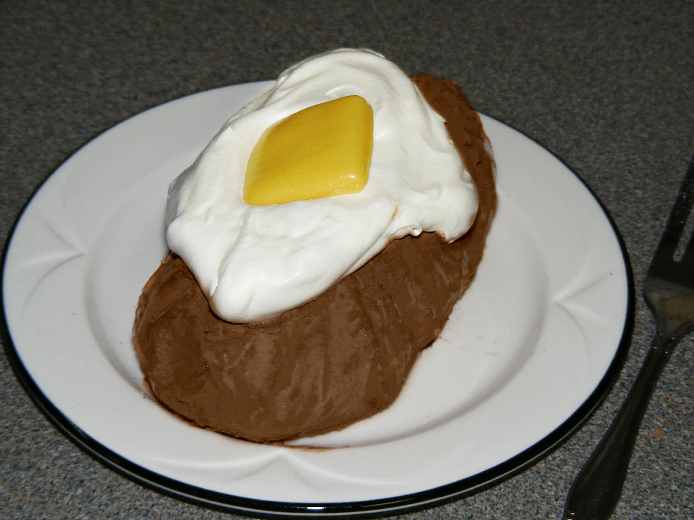

Fake Baked Potato Recipe!

Ingredients
- 2 scoops vanilla ice cream
- 2 tablespoons cocoa powder
- 3 tablespoons whipped topping
- 1 yellow starburst candy
Instructions
- Take 2 large scoops of vanilla ice cream and place on a large piece of plastic wrap. Wrap up and mold with hands into a potato shape. Put in freezer to set (about 20 minutes).
- Put cocoa powder into a bowl and roll unwrapped ice cream potato in the powder until completely covered. Slice the top of your ice cream potato and pull back edges a bit to make room for your whipped topping (Cool Whip) and Starburst candy butter. Shake off excess cocoa powder and place on a plate. Top with a dollop of Cool Whip for the "sour cream".
- Place your unwrapped yellow Starburst candy in the microwave for 10 seconds to soften - then press the edges out to make a larger "pat of butter". Top your potato and enjoy!